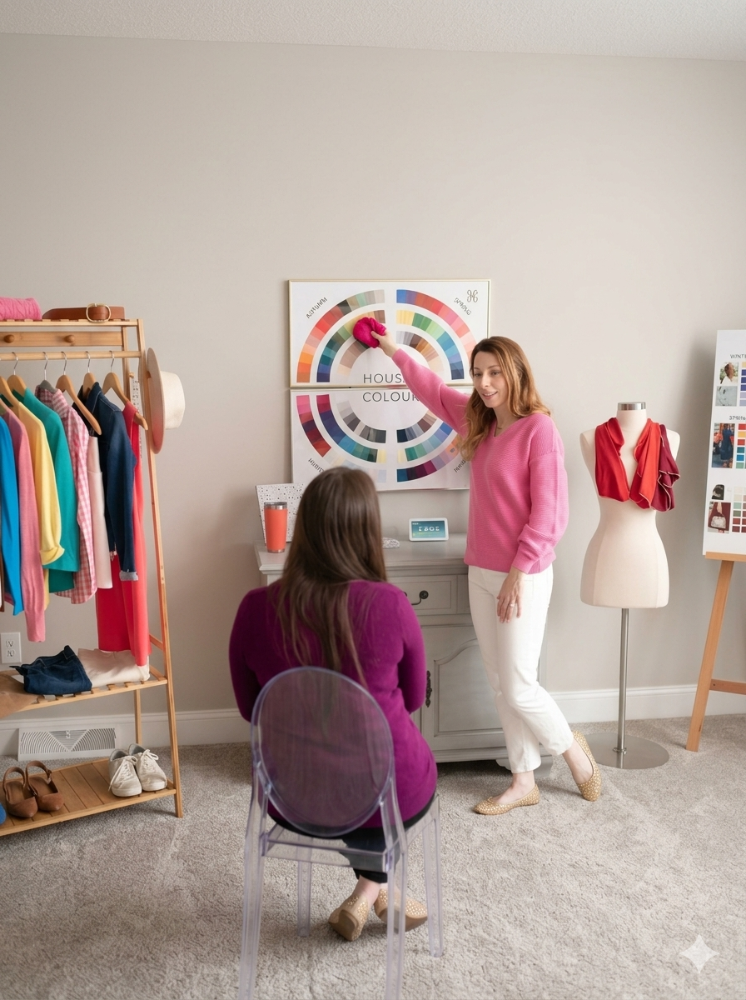
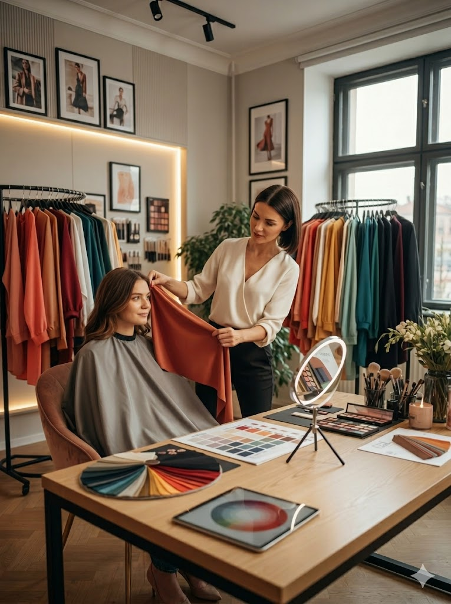
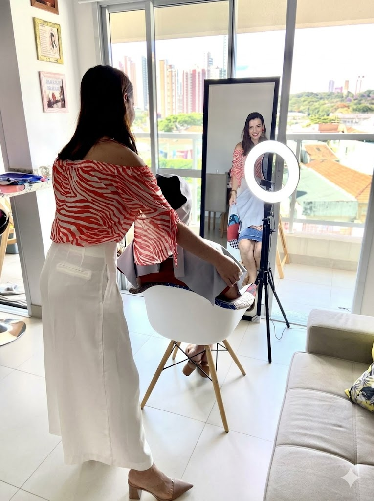

Galería de Inspiración
Descubre nuestro portfolio de asesorías de imagen personal, colorimetría y transformaciones de estilo

El Poder de la Presentación Profesional
Cuando tu vestuario habla con seguridad, tú no tienes que hacerlo. Cada prenda bien elegida amplifica tu profesionalismo y te permite entrar a entrevistas, reuniones y eventos con la confianza de que tu imagen es tu aliada.
Agendar CitaTu Belleza Natural, Amplificada
No se trata de esconderse detrás del maquillaje, sino de revelarse. Con técnicas profesionales realzamos tus mejores facciones y creamos un look que te hace sentir bella, segura y auténtica todos los días.
Agendar Cita
Tus Colores Correctos, Tu Mejor Versión
¿Alguna vez notaste que un color te hace ver radiante y otro te apaga? No es coincidencia. Tu paleta personal de colores existe, y cuando la encuentras, todo cambia: cabello, ropa, maquillaje... ¡todo brilla más!
Agendar Cita
Cuando Vestuario, Maquillaje y Color se Unen
La magia ocurre en la intersección. Cuando tu ropa, maquillaje y colores trabajan juntos, no solo te ves diferente. Te SIENTES diferente. Es confianza, autoestima, y presencia en su forma más pura.
Agendar Cita¿Listo para Transformar tu Imagen?
Nuestro equipo de expertos está disponible para brindarte una asesoría personalizada adaptada a tus necesidades y objetivos.
Agenda tu Cita Ahora